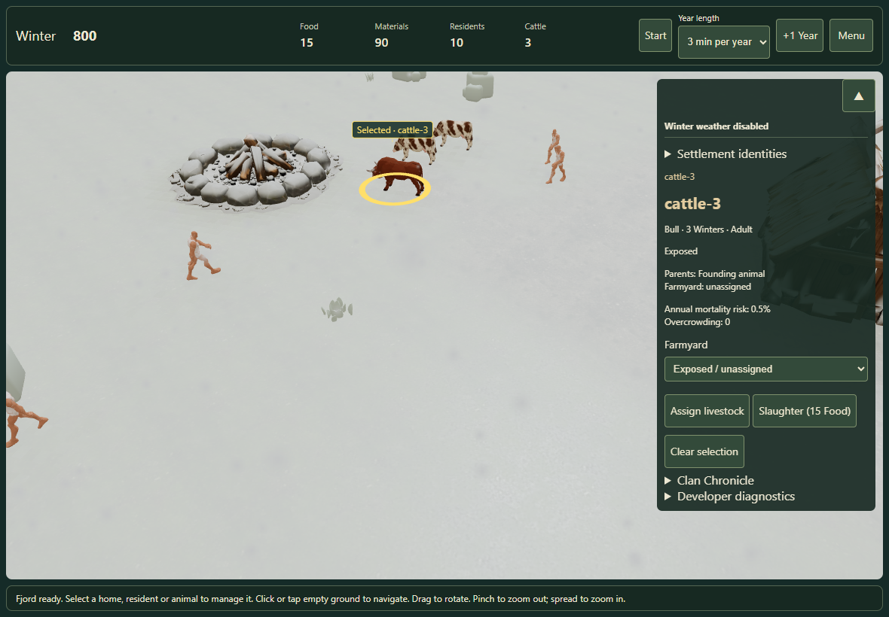

Seasonal particles use the existing effects library. They follow the running campaign, fade across the season boundary, and leave gameplay and saved history unchanged.
Low by default Up to 300 flakes or 250 raindrops. Normal allows 700 / 600; both can briefly coexist during a transition.
Pause and accessibility Pause freezes the effect. Off and reduced motion clear particles. Touch selection continues through them.
Northern Spring Falling snow fades out after Spring begins. The existing snow cover retains its gradual thaw.

Winter snowfall, Low. Stills show a frozen moment; the in-game particles fall while the clock runs.
Review in the game
Open Fjord settlement. Keep the clock running, open Menu → Local effects, and compare Low, Normal and Off. A new year begins in Winter; Autumn begins at tick 750. The campaign's weather option controls economic rules, separately from these seasonal visuals.
Validation and limits
Automated Edge Chromium touch emulation checks real rendering, menus, selection, live season transitions, pause, hidden tabs, imports and canonical-state equivalence.
Particle counts and two render batches are bounded; zooming changes readable size rather than adding particles.
No new accumulation, splashes, puddles, roof-collision or wind simulation. Existing surface snow is retained.
The recorded frame intervals are from this development machine. They are not an isolated GPU-cost comparison or a physical iPad certification.